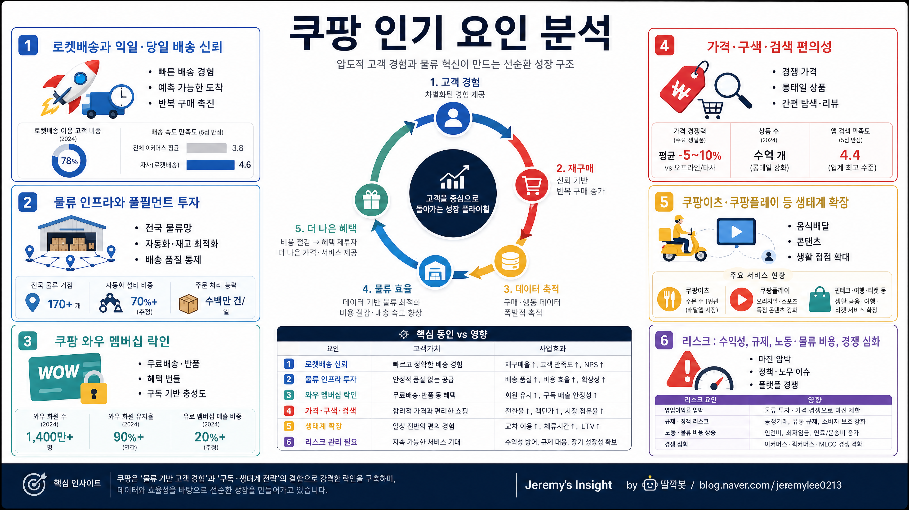

260502 쿠팡 인기 요인 분석 보고서

핵심 결론
- 쿠팡의 인기는 단순히 상품이 싸서가 아니라 배송 신뢰, 멤버십 락인, 물류 인프라, 사용 편의성이 결합된 결과다.
- 핵심 경쟁력은 고객이 “쿠팡이면 빨리 오고 실패 확률이 낮다”고 느끼는 습관형 구매 경험을 만든 데 있다.
- 장기 관건은 물류비·수익성·규제 리스크를 관리하면서 와우 멤버십 생태계를 얼마나 넓히느냐다.
쿠팡의 본질
쿠팡은 이커머스 앱이 아니라 물류 기반 생활 인프라 플랫폼에 가깝다. 사용자는 상품을 비교하러 들어가기보다, 필요한 물건을 가장 빨리 받을 수 있는 기본 선택지로 쿠팡을 연다.
이 차이가 중요하다. 일반 쇼핑몰은 가격과 상품 수로 경쟁하지만, 쿠팡은 “내일 아침 문 앞에 도착한다”는 기대를 판다.
인기의 핵심 구조
| 성공 요인 | 의미 | 강력한 이유 |
|---|---|---|
| 로켓배송 | 빠르고 예측 가능한 배송 | 구매 결정의 불확실성을 줄임 |
| 물류 인프라 | 직매입·풀필먼트·배송망 투자 | 경쟁사가 단기간에 복제하기 어려움 |
| 와우 멤버십 | 배송·반품·콘텐츠 혜택 묶음 | 해지하기 어려운 생활 구독이 됨 |
| 쉬운 UX | 검색·결제·반품 과정 단순화 | 쇼핑 피로를 줄이고 반복 구매를 유도 |
| 구색과 가격 | 생활필수품부터 디지털까지 포괄 | 앱 하나로 해결되는 범위가 넓음 |
| 생태계 확장 | 쿠팡이츠·쿠팡플레이 등 연결 | 멤버십 가치와 체류 시간을 키움 |
왜 고객이 계속 쓰나
쿠팡의 강점은 “매번 가장 싼 곳”이 아니라 “실패 가능성이 낮은 곳”이라는 점이다. 배송일, 반품, 고객센터, 결제 과정에서 예측 가능성이 높아지면 고객은 더 이상 매번 비교하지 않는다.
이때부터 쿠팡은 쇼핑 앱이 아니라 생활 기본값이 된다. 특히 육아, 1인 가구, 맞벌이, 자영업자처럼 시간 비용이 큰 고객에게 빠른 배송은 가격 할인 이상의 가치가 있다.
20년차 리테일·플랫폼 관점의 판단
쿠팡의 경쟁력은 앱 화면이 아니라 뒤에 있는 물류 시스템이다. 물류센터, 재고 운영, 라스트마일 배송, 반품 처리, 데이터 기반 수요 예측이 하나로 묶여야 로켓배송 경험이 나온다.
즉 쿠팡은 전통 유통사와 IT 플랫폼의 중간에 있다. 비용은 무겁지만, 한번 규모가 만들어지면 고객 습관과 물류 밀도가 동시에 방어막이 된다.
다만 이 모델은 고정비가 크다. 성장기에는 강력하지만, 경기 둔화·인건비 상승·규제 강화·경쟁 심화가 겹치면 수익성 압박이 커질 수 있다.
강점과 리스크
| 구분 | 핵심 |
|---|---|
| 강점 | 배송 신뢰, 물류 인프라, 와우 멤버십, 쉬운 반품, 높은 사용 빈도 |
| 기회 | 생활 카테고리 확장, 광고 사업, 멤버십 혜택 강화, 음식·콘텐츠 연계 |
| 리스크 | 물류비 상승, 노동·안전 이슈, 규제, 경쟁사의 빠른 배송 대응 |
| 투자 포인트 | 매출 성장보다 영업이익률, 와우 회원 유지율, 광고·멤버십 수익화가 중요 |
관찰 지표
| 지표 | 봐야 하는 이유 |
|---|---|
| 활성 고객 수 | 고객 기반이 계속 넓어지는지 확인 |
| 고객당 구매액 | 생활 기본값으로 자리 잡는지 판단 |
| 와우 멤버십 유지율 | 락인 효과와 구독 가치 확인 |
| 영업이익률/FCF | 물류 모델이 수익성으로 전환되는지 확인 |
| 광고 매출 | 이커머스 플랫폼의 고마진 수익원 |
| 반품·배송 비용 | 고객 경험과 수익성의 균형 지표 |
최종 판단
쿠팡의 인기 요인은 가격 경쟁 하나로 설명하기 어렵다. 핵심은 고객의 일상 문제를 “빠르고 확실하게 해결해주는 경험”을 반복적으로 제공했다는 점이다.
한 줄 결론: 쿠팡은 빠른 배송을 무기로 고객의 쇼핑 습관을 장악한 물류 기반 생활 플랫폼이며, 앞으로는 성장보다 수익성과 생태계 확장이 핵심 평가 기준이다.
Jeremy's Insight by 🤖 딸깍봇 https://blog.naver.com/jeremylee0213